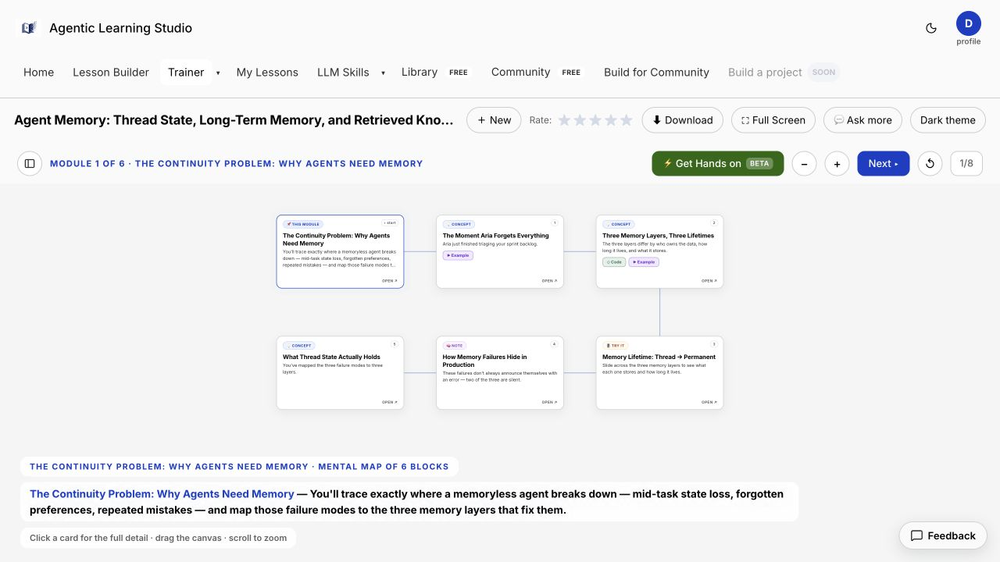
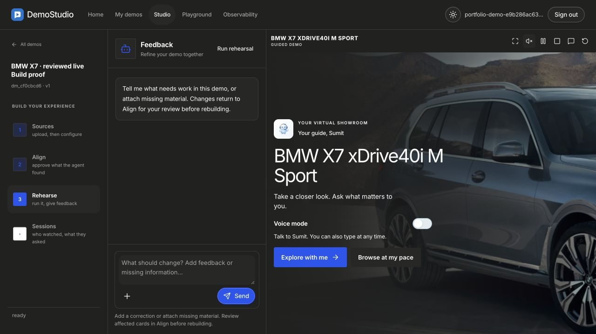
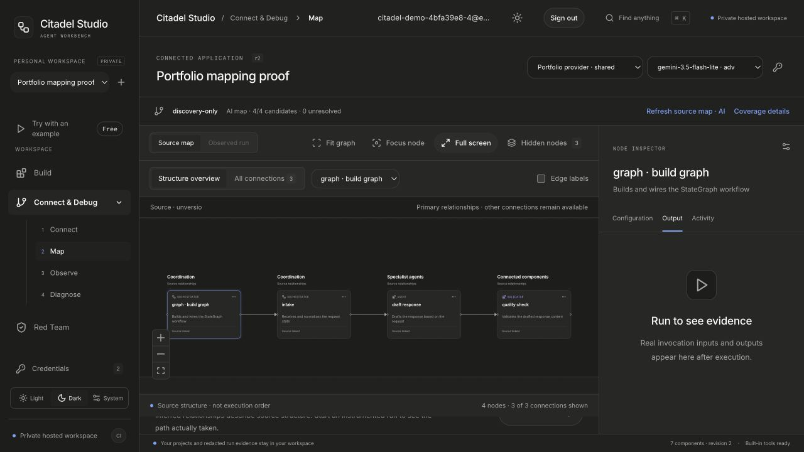
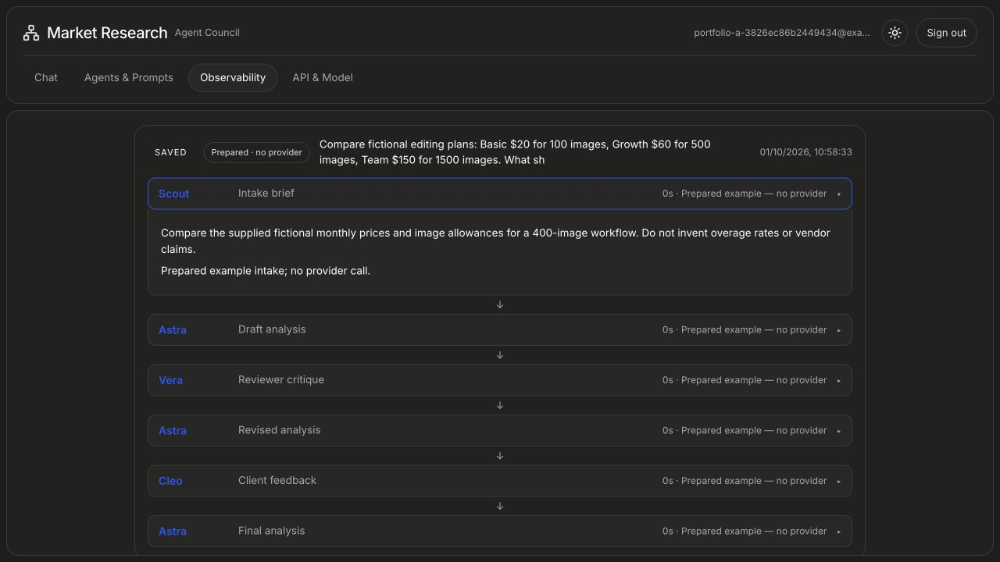
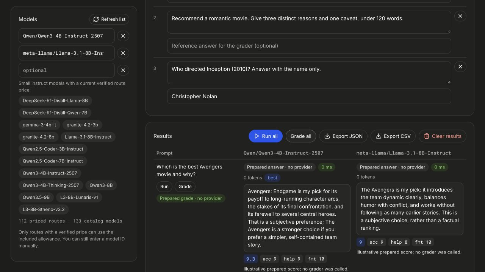
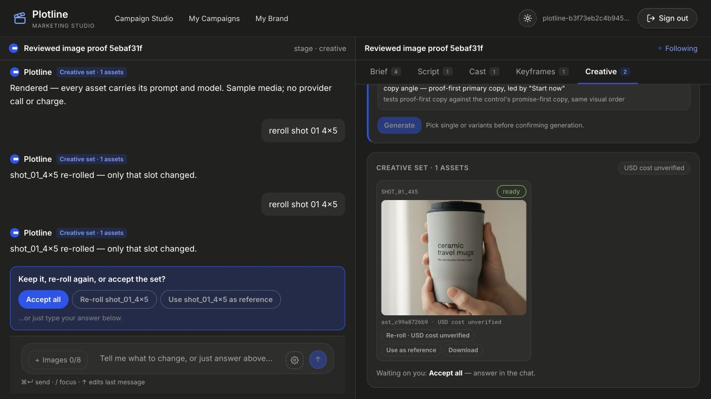
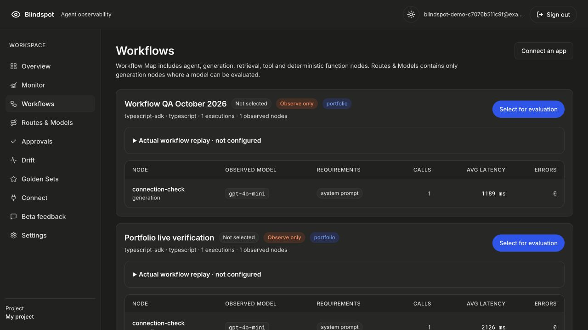
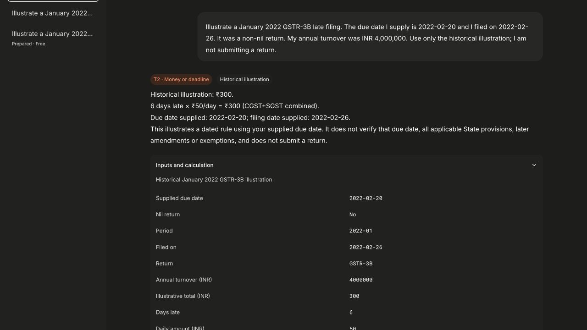
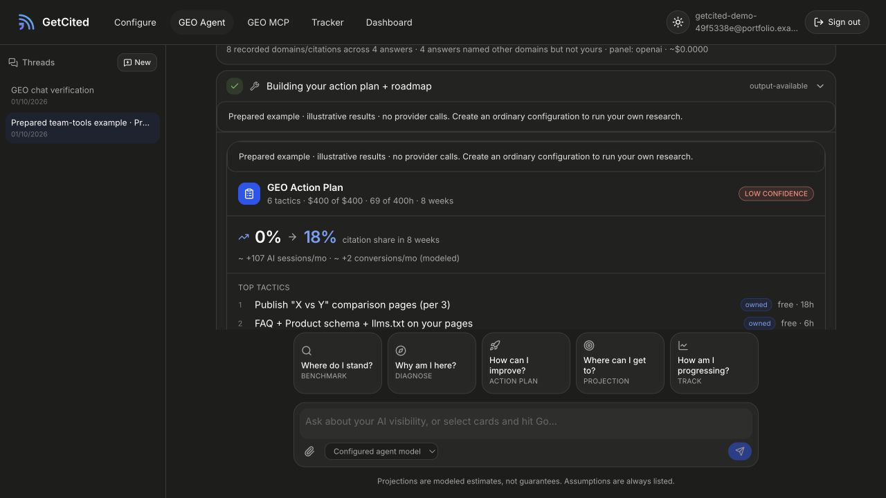
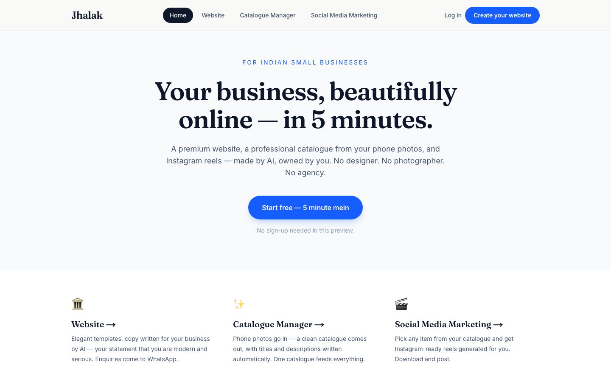

Set direction.
Own the outcome.
P&L, product strategy, pricing, roadmap and growth. At PixelBin, repositioned point tools as an AI media-generation platform and aligned teams to per-tool revenue goals.
AI product & growth leader
From business opportunity
to a working AI product.
I combine P&L ownership and enterprise consulting experience with hands-on AI solution design. My work spans product strategy, growth and the systems that make AI useful—from agentic workflows to model evaluation and post-training.
The combination
Six years building AI and analytics products, within a career spanning strategy consulting, enterprise transformation and product leadership. I work from the business decision through the user experience and system design.
P&L, product strategy, pricing, roadmap and growth. At PixelBin, repositioned point tools as an AI media-generation platform and aligned teams to per-tool revenue goals.
Agentic workflows, RAG, evaluations, memory and MCP. Bring model choice, product UX, architecture, cost and reliability into the same conversation.
Independently build and deploy working AI products. Use real implementation, evaluations and post-training experiments to test assumptions and deepen product judgment.
What I work across
P&L ownership · Product strategy & roadmaps · Pricing & monetization · PLG · SEO / GEO · Conversion · Enterprise GTM · PRDs & solution design
Agentic workflows · LangGraph / LangChain · RAG · Evaluations · MCP & tool calling · Prompt & context engineering · Memory architecture · Multimodal pipelines
SFT · Continued pre-training · LoRA / PEFT · Preference optimization experiments · Evaluation design · Comparing prompting, retrieval and training
Python · JavaScript · SQL · pandas · GCP / Vertex AI · AWS · PostHog · GA4 · Paddle · Sentry · Funnel & cohort analysis · A/B testing
Professional experience
Fynd · PixelBin
P&L, leadership reporting and product roadmap for a suite of 15+ AI media tools, reporting to the Founder. Products include PixelBin, WatermarkRemover.io, Upscale.media and EraseBG.
Deloitte India
A product and AI solutions focus within the Strategy & Operations tenure below.
Deloitte India & PwC
KPMG India
Led teams of 4–5 on profitability diagnostics across 40 dealers, identifying 200–300 bps improvement potential. Delivered CX and dealer-incentive programs and manpower-cost optimization of approximately 15% for a steel manufacturer.
PwC India
Led capacity and throughput improvement, total productive maintenance and PMO projects across pharmaceutical and paper businesses.
Independent practice · 2026
Designed, built and deployed end to end. These products let me work through real trade-offs in model quality, orchestration, UX, latency, cost and reliability.
Multi-agent learning experiences with grounded content, interactive lessons, validation rules and evaluations.
Source-grounded product demos combining language, vision and voice—from script and narration to live questions.
Agent traces, quality evidence and cost visibility, with evaluation gates before proposed model-routing changes.
Source-grounded questions and structured extraction, with transparent deterministic filing calculations.
Applied learning, measured
Hands-on model adaptation across Qwen 0.5B and 1.7B models: continued pre-training, LoRA supervised fine-tuning, preference optimization experiments, and retrieval with reranking. The aim is practical judgment about answer quality, unsupported claims and when a model should decline to answer.
Compared the base Qwen3-1.7B model with LoRA SFT v2 under the same reranked-RAG condition. This comparison sits within 1,680 saved responses across 24 evaluation cohorts. Results use a semantic judge on a 140-question fictional development set; they are not held-out or production results.
Evaluate answerability and refusal separately; compare prompt-only, retrieved, oracle and missing-evidence conditions. Keep data, model and prompt records traceable.
Completed an earlier 0.5B DPO learning experiment. Held back the newer 1.7B DPO run because its preference-data gate was not met.
The public repository covers the 0.5B learning lab. The newer 1.7B results above come from separate local experiments.
Foundations & recognition
B.Tech · Aerospace Engineering 2007–2011
Techfest leadership: team of 22, ₹10M budget and 75,000 footfall. Ran the International Robotics Challenge with AIT Thailand.
Amazon Web Services
Valid through August 2029
Agentic architecture, MCP & Claude Code
Score: 803 · Pass: 720
Machine Learning Specialization · Stanford Online & DeepLearning.AI · 2025
Generative AI with Large Language Models · AWS & DeepLearning.AI · 2025
IBM Data Science courses · Python, data visualization and applied project work · 2023
AI solution design, data-driven product management & text-to-image generation · LinkedIn Learning · 2025
Recognition
The full story, in two pages
Experience, education and certifications in the latest CV.
Independent products
Nine live AI products, designed, built and deployed end to end. Explore the decisions behind each workflow—from learning and research to creative production, evaluation and decision support.

Interactive lessons, quizzes and hands-on notebooks turn complex AI topics into something you can explore. Start with a prepared lesson, or use your own material to build a learning path.

Build narrated product tours from source documents and images. Visitors can explore the gallery, ask grounded questions and save a recap; the prepared BMW tour demonstrates the experience.

Map an agent repository, inspect its source and explore execution traces in one workbench. Source maps stay distinct from runtime evidence, with a cached workflow you can run to see the difference.

Configure a council of research and review agents, follow their work and export the final report to PDF or PowerPoint. Prepared examples make the full workflow available without a model call.

Run the same prompts across up to three models, add reference material and compare independently graded answers. Inspect scores and usage, then export the comparison to CSV or JSON.

Turn a conversational brief into a reviewed image campaign. Work through concepts, storyboards and brand references, reroll an individual creative, and export an approved campaign bundle.

Connect an agent through the SDK and inspect its model calls, execution traces and costs. Build evaluation evidence and review proposed routing changes before approving a model switch.

Ask source-grounded GST questions, inspect extracted facts, and review transparent filing calculations. A historical worked example shows each input and formula.

Compare how AI models mention your brand, investigate gaps with the GEO assistant, and turn findings into a budgeted action plan with an approval tracker.
Further explorations
More product experiments and client work, with their original live demos.
 LIVE
LIVEAn AI image-production workflow with a human calibration gate. A bounded LangGraph loop generates, checks and revises assets; deterministic rules enforce quality decisions and spend caps. Built with durable job state, retries and escalation when automation should stop.
 LIVE
LIVEConnect GitHub, Claude Code and Sentry signals to understand AI-assisted engineering outcomes. A deterministic scoring engine keeps the math separate from a grounded coaching agent, with editable KPI weights and daily reporting.

LIVETurn phone photos and a short Hinglish voice brief into a website, product catalogue and social content for small businesses. A conversational editor supports visual changes, with enquiries routed to WhatsApp.
 LIVE
LIVEA product catalogue and enquiry website for a PET machinery manufacturer. Built for a non-technical owner to maintain, with an admin interface, client-side image compression, search metadata and a direct enquiry flow.
From my GitHub
Reusable tools for more reliable AI work, and hands-on labs for understanding how models learn.
A portable workflow for AI-assisted software delivery: clear briefs, session handoffs, evaluation loops, failure reviews and secret checks.
Explore repository : Power CodingLocal memory for AI work: a Markdown knowledge base and entity graph that carry decisions, preferences and constraints across sessions.
Explore repository : KeelAn evaluation-first notebook lab comparing prompting, continued pre-training, fine-tuning, preference optimization and retrieval on a small language model.
Explore repository : Post-Training LabExplore attention, predictions, gradients and weight updates in a 3D lab powered by small trainable teaching models.
Explore repository : LLM AnatomyTurn a topic into an interactive HTML lesson with a mental map, worked examples and a browser-based knowledge check.
Explore repository : Agentic Learning SkillReusable expert-review personas that challenge assumptions and revise an AI draft before delivery.
Explore repository : SharpenProducts and internal tooling designed and shipped with engineering, ML and growth teams — for a suite of 15+ tools spanning PixelBin, WatermarkRemover.io, Upscale.media and EraseBG.
P&L owner and product lead across 15+ tools — product strategy, solution architecture and growth, working with engineering and ML teams.